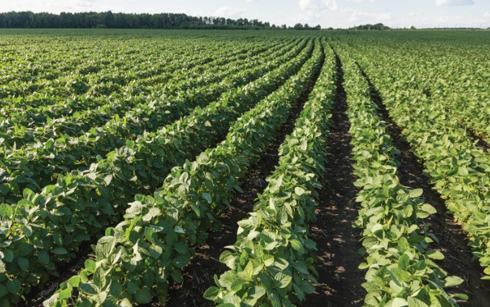

The importance of plains
Plains normally have fertile soil that is suitable for farming and livestock grazing. Similarly, plains are also suitable for building houses and other kind of infrastructure because they do not require much levelling. Figure 9 shows farming on a plain.

Plains are also good for sports and transport activities. In addition, these areas may have forests that provide habitats for animals and other kinds of organisms which are tourists’ attractions.
Basins
A basin is a bowl-shaped depression on the earth’s surface. Some basins contain water, while others do not. A basin that contains water forms a lake. An example of a basin with water is Lake Victoria which borders Mwanza, Kagera, Mara, Simiyu and Geita regions. Lake Victoria is the largest lake in Tanzania and Africa.